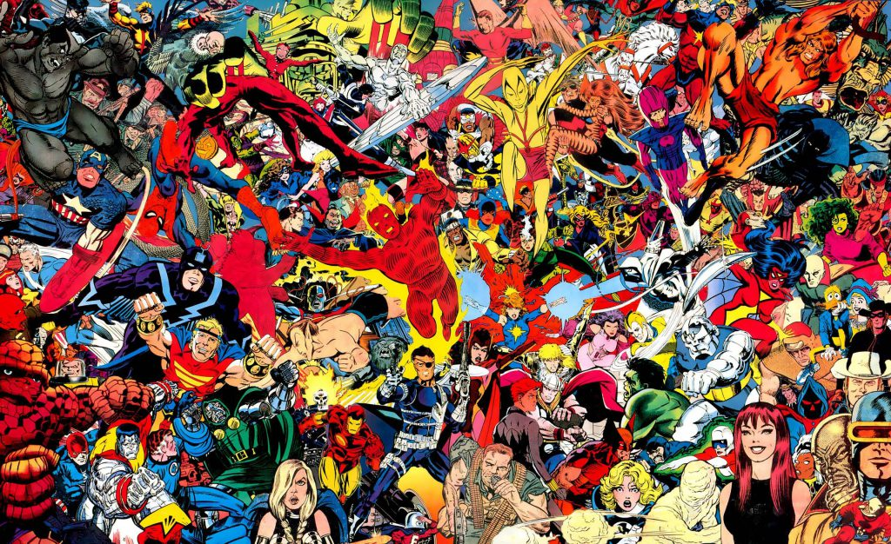

Acerca de Comics.
El término cómic es utilizado para designar a aquellas formas de relato gráfico que se arman en base a dibujos
encuadrados en viñetas.
El cómic también puede ser conocido como historieta o tebeo dependiendo del lugar o región en la que se haga
referencia a él.
El cómic es una forma de arte que se ha popularizado especialmente en el siglo XX aunque podemos encontrar
varios antecedentes de esta forma de relato en otros tiempos de la historia.
La presencia y popularización del cómic se debió en gran parte a su llegada al público masivo a través de la
publicación de revistas, periódicos y otros medios accesibles de información. Los artistas de historietas y
cómics se volvieron especialmente populares entre los niños a pesar de que muchas de las historietas estaban
dirigidas a los adultos.
La historieta o cómic estadounidense constituye una de las tres grandes tradiciones historietísticas a nivel
global, junto con la franco-belga y la japonesa. Siendo la primera en generar una verdadera industria y en
adoptar de forma consistente el globo de diálogo, lideró la producción mundial durante toda la primera mitad del
siglo XX, gracias a series como Flash Gordon, Krazy Kat, Li'l Abner, Little Nemo in Slumberland, El Príncipe
Valiente, Popeye, Terry y los piratas o The Spirit.
Dominada desde entonces por el género de los superhéroes, cuyos personajes más populares son Spider-Man, Batman
y Superman, ha aportado obras tan diversas como American Splendor, Calvin y Hobbes, Conan el Bárbaro, Den, Jimmy
Corrigan, Maus, Odio, Peanuts.
Entre sus autores más reconocidos, pueden citarse a Neal Adams, Carl Barks, Richard Corben, Robert Crumb, Will
Eisner, Burne Hogarth, Jack Kirby, Harvey Kurtzman o Frank Miller.
Cuenta con premios como el Eisner y su evento más importante es la Comic-Con de San Diego.
